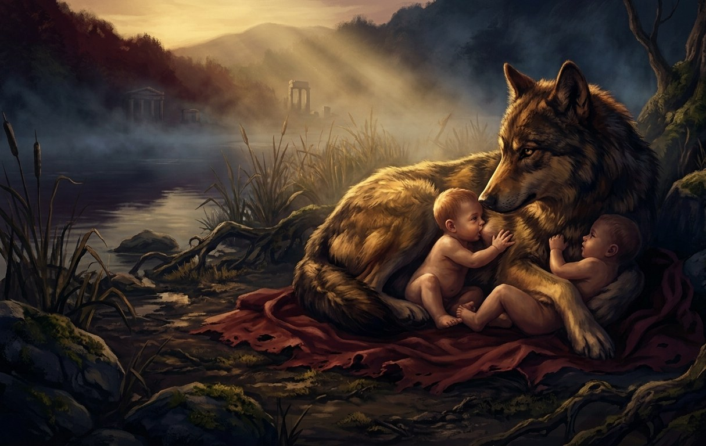
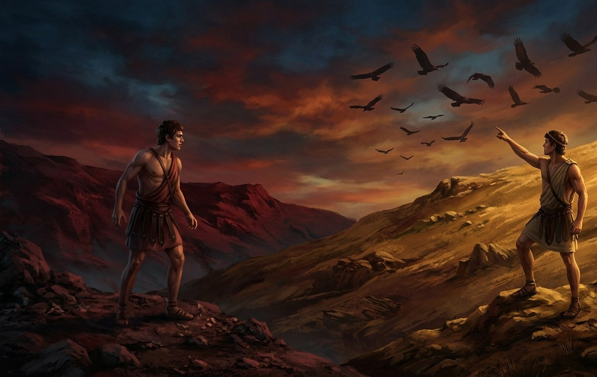
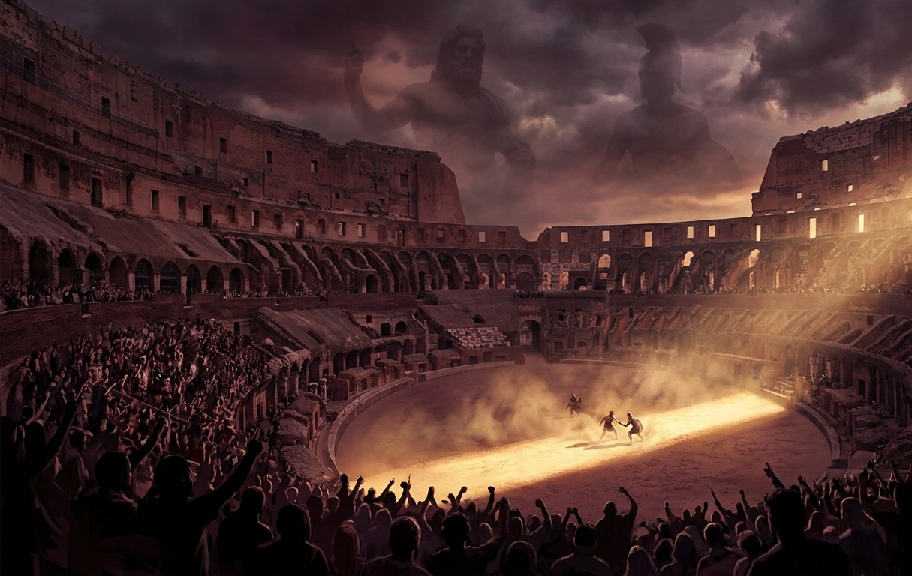

Mythology & the State of the Empire
The Wolf, the Twins, and the Sky's Judgment

A she-wolf finds two crying infants on the banks of the Tiber - and chooses not to eat them.
Long before there was an Empire, before there was a Senate to remember what it once was, there was a girl named Rhea Silvia, a priestess of the hearth-fire, forbidden by her own uncle from ever bearing children who might one day challenge his throne. Mars wanted her anyway, and gods have never much cared what mortal kings forbid. She bore twin sons - Romulus and Remus - and for that alone, the king ordered them drowned in the Tiber.
They did not drown. The river carried them to a quiet bank instead, where a she-wolf found two crying infants and, for reasons no one has ever fully explained, chose to nurse them rather than eat them. A shepherd found them next, and raised them not knowing - or perhaps not quite believing - whose sons they truly were.
Grown to manhood and told the truth of their birth, the brothers set out to build a city of their own on the seven hills above that same river. They could not agree on which hill, or whose name the city would carry - so they did what their father's blood in their veins had always known to do, and let the sky decide. Each brother kept a lonely vigil on his chosen hill, watching the heavens for a sign. Remus saw six vultures cross the sky. Romulus, watching a while longer, saw twelve. The gods had spoken, and spoken through birds - and augury, the reading of the sky's judgment, has been sacred to Rome ever since. Every Augur who has ever read an omen traces that art back to a single morning on a hillside, before the city even had a name.

Remus counts six vultures. Romulus, watching a while longer, counts twelve.
What the sky did not settle, the brothers settled themselves, and not gently - Rome's very first stones were laid over a quarrel between two sons of the same god, and only one of them lived to see the walls finished. Romulus named the city for himself, became its first king, and never spoke of his brother again where anyone could hear him. Rome has always known, in the quiet way old families know uncomfortable things, that its founding cost more than it likes to admit.
That is why the gods have never been distant here, and never needed to be summoned back. Mars has a son's city to watch. Venus, whose own blood runs in Rome's oldest and proudest families through the hero Aeneas, has a bloodline to protect - and to judge, whenever some ambitious family claims her favor a little more boldly than their actions have earned. Even now, a new Emperor's claim to that old, storied blood is being weighed in quiet rooms across the Empire - not everyone is convinced the sky would send twelve vultures for this one. Rome was not merely blessed by the gods once, in some distant founding story. It was built by one directly, argued over by two, and has been watched, judged, and occasionally punished by their whole quarrelsome family ever since.
An Empire at Its Height - and Its Most Fragile
Rome has never been larger, richer, or more feared. Its legions hold provinces on three continents. Its markets overflow with the wealth of a hundred conquered peoples. By every visible measure, the Empire has never stood taller. And yet greatness of this size rests on foundations no one has fully tested - a throne only just claimed, a war that refuses to end, a Senate that remembers when it ruled alone, and borders that never stop being tested by those who would rather burn Rome's greatness than kneel to it.
A War That Will Not End
Carthage has not fallen. The war with Rome's oldest rival still rages on land and sea, a generational conflict that has made and broken more careers, fortunes, and families than anyone still bothers to count.
An Untested Ruler
A new Emperor sits the throne, and the ink on that claim is barely dry. Loyalty across the legions and provinces is still being won, tested, and in some quarters, openly questioned.
Barbarians at Every Border
Beyond every border, barbarian hosts test Rome's reach - not myth, not distant memory, but a constant, grinding pressure the legions can never fully relax against.
The War Undying
Generations of Romans have been born, lived, and died knowing nothing but war with Carthage. Every triumph is answered by a fresh Carthaginian fleet on the horizon; every treaty is a pause, never a peace. The war has become something closer to weather than history - a constant condition of the world, shaping trade, politics, and ambition alike. Soldiers returning from the front bring back more than scars; they bring back a city's worth of rumors about what's really happening at the edges of the map.
A Throne Newly Claimed
The old Emperor is gone, and a new one wears the purple - but a throne claimed is not the same as a throne secured. Across the Empire, governors, generals, and senators alike are quietly taking the measure of the new ruler, deciding in private which way their loyalty will bend if it ever needs to. The Senate remembers, as it always does, that it once ruled without an Emperor at all - and beneath its public displays of deference, that memory has never fully gone quiet. Public ceremony insists the Empire is united and unshaken. Private conversation, in certain rooms, insists otherwise.
Bread, Blood, and Circuses

The crowd is not the only audience the games have ever had.
A restless people with a war they cannot see the end of and a ruler they haven't decided to trust yet are a dangerous thing to leave idle. The games in the Colosseum are no accident of scheduling - they are policy, as deliberate as any treaty, designed to give the people something immediate and visceral to care about instead of the slower, more dangerous questions simmering in the Senate and the streets. What the architects of the games perhaps did not plan for is who else is watching. Mars finds little in the world that pleases him more than a well-fought duel on Roman sand. Bacchus has never once turned down an excuse for a celebration. The gods have taken a very personal interest in the games - which means every fighter who steps onto that sand may be performing for a far stranger audience than the crowd in the stands.
The Frontier Never Sleeps
Rome's borders are long, and not all of them are held by choice. Barbarian confederations - proud, organized, and increasingly coordinated - press against the Empire's reach on multiple fronts at once, testing weaknesses the legions would rather not admit to. Some come for plunder. Some come for old grievances against an empire that has taken their land, their kin, or their gods. A few, the frontier commanders whisper uneasily, come for something closer to a crusade. Rome calls them barbarians. They have their own names for themselves, and their own reasons for hating the eagle standards marching toward their homes.
How This Shapes the World You Play In
Nothing Is Settled
An ongoing war, an untested Emperor, and a hungry frontier mean the balance of power in Rome is genuinely unresolved - and genuinely available to be shaped by whoever's bold enough to try.
Divine Attention Has Stakes
The gods were never waiting for permission to get involved, and the Colosseum has their genuine interest. A favor won or lost in the arena doesn't stay in the arena.
Every Faction Has a Reason
The Imperial Legion, the Praetorian Order, and the Hellenic Resistance all read differently against this backdrop - a new throne, a war without end, and a Senate that hasn't forgotten what it used to be. See where they stand on the Factions page.